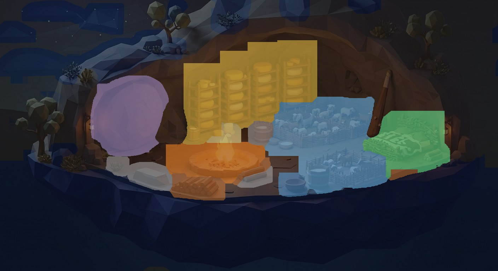
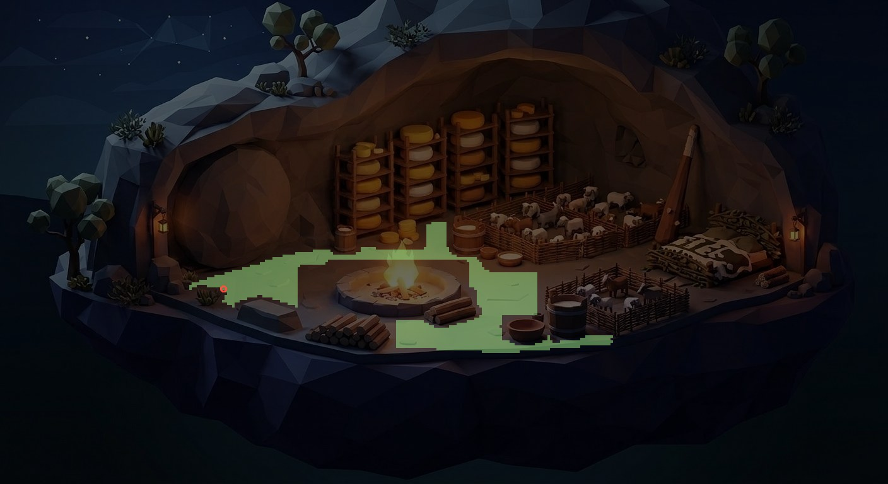

Ulysses, click-steered — SAM 2 labels the scene so he knows where to go
The photographed man from the demo before this one, now with a
map: meta/sam-2 (Replicate, automatic mask generation) segments the
cave-shut plate into regions; the regions are named by position and colour with the hand ledger as
reference; the floor that remains — minus every segmented object, every ledger box, and half his own
footprint — becomes an A* grid at 4 plate-px a cell. Click anywhere on the floor and he
walks there, threading the obstacles; click the fire or the pens and the margin names what refused
him. The posture law, the 43 px/m scale law and the banked walk clip all ride along unchanged.
The fire breathes ember sparks, a smoke wisp climbs off the blaze, dust hangs in the two lamp
halos — all seeded, all on the sim clock.
click the floor — he paths around the fire, the tub, the pens
The scene, read by machine. SAM 2 returns 84 regions
over the plate. Each is labeled by heuristics — the warmest bright region is the fire, the round
mass at the mouth is the door-stone, tall amber stacks are the racks — with the ledger's boxes as
the reference key, and the flat floor-paint patches (the dung flecks the ledger itself calls paint)
are returned to the floor. What SAM 2 finds that the ledger never boxed — the whey tub, the
cream bowl, the grey stone by the mouth — blocks the walk anyway; what it misses (the firewood
pile, the ring's NW rim spill) the ledger's own boxes still forbid. Neither map is trusted alone.

the labeled scene — SAM 2 regions tinted by name: the fire, the pens,
the racks, the door-stone, the bed, the tubs.

the walkable floor — the ledger's floor band minus every region and box,
eroded by half his footprint; the ring marks his spawn at the mouth threshold.